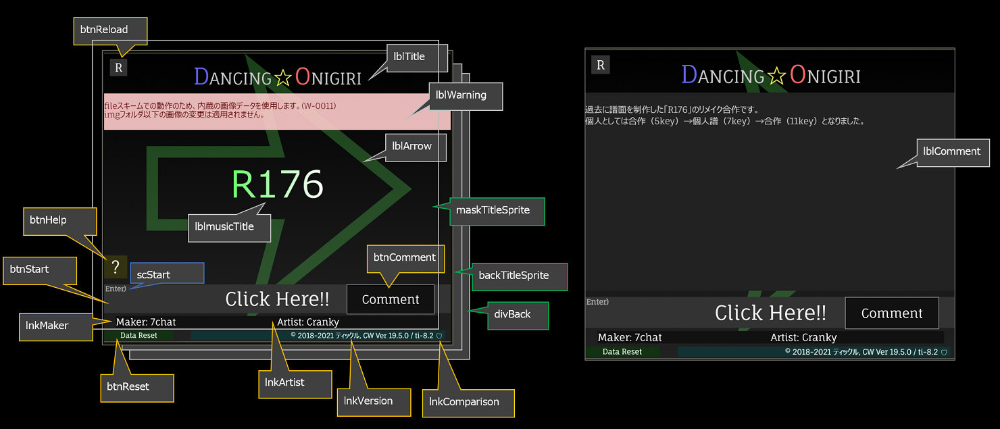
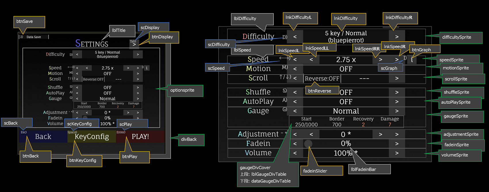
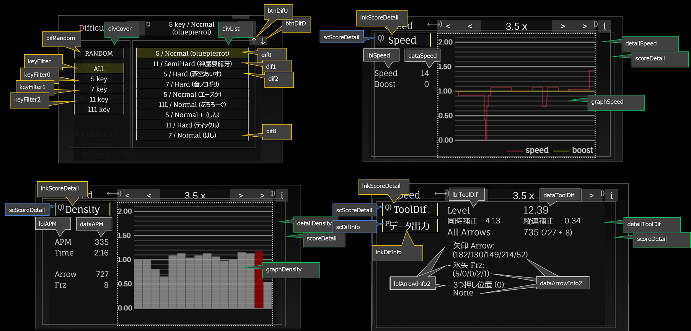
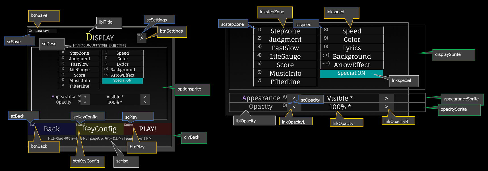
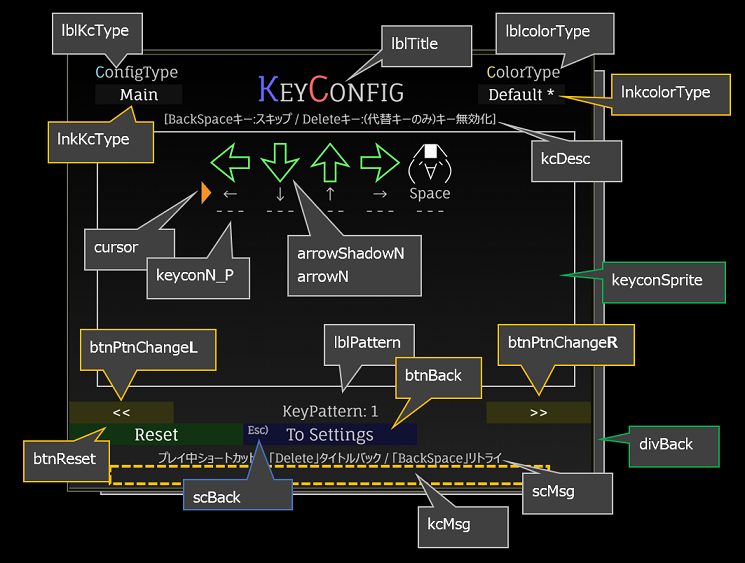
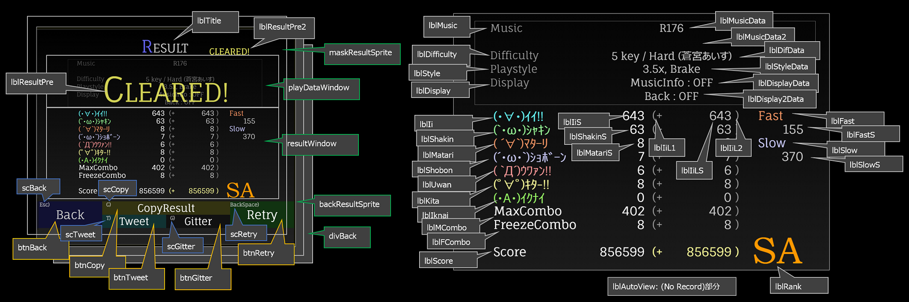

IDリファレンス
タイトル画面

- divBack
- lblArrow
- backTitleSprite - 背景モーション(タイトル)
- lblTitle
- lblmusicTitle [musicTitle] - 曲名
- lblmusicTitle1 - 曲名(1行目)
- lblmusicTitle2 - 曲名(2行目)
- lblWarning - 警告メッセージエリア
- btnStart [lbl.clickHere] - スタートボタン
- btnReset - ローカルストレージのデータ消去ボタン
- btnReload - リロードボタン
- btnHelp - ゲーム画面説明へのリンクボタン ※ver18.8.0より
- lnkMaker [tuning] - 制作者リンク
- lnkArtist [musicTitle]- アーティストリンク
- lnkVersion [releaseDate]- バージョン番号、GitHubリンク
- lnkComparison - セキュリティポリシーリンク
- lblComment [commentVal] - コメントエリア
- btnComment [lbl.comment] - コメントエリアの表示有無ボタン
- maskTitleSprite - マスクモーション(タイトル)
設定画面


- divBack
- lblTitle
- optionsprite - 設定描画エリア
- difficultySprite
- lblDifficulty [lbl.Difficulty]
- lnkDifficulty
- lnkDifficultyR
- lnkDifficultyL
- scDifficulty
- speedSprite
- lblSpeed [lbl.Speed]
- lnkSpeed
- lnkSpeedR
- lnkSpeedL
- lnkSpeedRR
- lnkSpeedLL
- scSpeed
- btnGraph - 譜面詳細子画面の開閉ボタン
- scDifficulty
- motionSprite
- lblMotion [lbl.Motion]
- lnkMotion
- lnkMotionR
- lnkMotionL
- scMotion
- reverseSprite - Reverse設定エリア：拡張スクロール設定(Scroll)が無効時にscrollSpriteの代わりに使用
- lblReverse [lbl.Reverse]
- lnkReverse
- lnkReverseR
- lnkReverseL
- scReverse
- scrollSprite - Scroll設定エリア
- lblScroll [lbl.Scroll]
- lnkScroll
- lnkScrollR
- lnkScrollL
- btnReverse
- scScroll
- shuffleSprite
- lblShuffle [lbl.Shuffle]
- lnkShuffle
- lnkShuffleR
- lnkShuffleL
- scShuffle
- autoPlaySprite
- lblAutoPlay [lbl.AutoPlay]
- lnkAutoPlay
- lnkAutoPlayR
- lnkAutoPlayL
- scAutoPlay
- gaugeSprite
- lblGauge [lbl.Gauge]
- lblGauge2
- gaugeDivCover
- lblGaugeDivTable - ゲージ詳細画面ヘッダー
- dataGaugeDivTable - ゲージ詳細画面数値部分
- dataGaugeStart
- dataGaugeBorder
- dataGaugeRecovery
- dataGaugeDamage
- lnkGauge
- lnkGaugeR
- lnkGaugeL
- scGauge
- adjustmentSprite
- lblAdjustment [lbl.Adjustment]
- lnkAdjustment
- lnkAdjustmentR
- lnkAdjustmentL
- lnkAdjustmentRR
- lnkAdjustmentLL
- scAdjustment
- fadeinSprite
- lblFadein [lbl.Fadein]
- lnkFadein
- lnkFadeinR
- lnkFadeinL
- lblFadeinBar
- fadeinSlider
- volumeSprite
- lblVolume [lbl.Volume]
- lnkVolume
- lnkVolumeR
- lnkVolumeL
- scVolume
- scoreDetail - 譜面詳細エリア
- lnkScoreDetail
- detailSpeed - 速度変化グラフ描画エリア
- detailDensity - 譜面密度グラフ描画エリア
- detailToolDif - レベル計算ツール値描画エリア
- difList - 譜面選択用セレクター(右側)
- difCover - 譜面選択用セレクター(左側)
- difRandom
- keyFilter
- keyFilterN
- btnDifU
- btnDifD
- btnBack [lbl.b_back]
- btnKeyConfig [lbl.b_keyConfig]
- btnPlay [lbl.b_play]
- btnDisplay
- btnSave [lbl.dataSave]
Display画面

- divBack
- lblTitle
- optionsprite - 設定描画エリア
- appearanceSprite
- lblAppearance [lbl.Appearance]
- lnkAppearance
- lnkAppearanceR
- lnkAppearanceL
- scAppearance
- opacitySprite
- lblOpacity [lbl.Opacity]
- lnkOpacity
- lnkOpacityR
- lnkOpacityL
- scOpacity
- displaySprite
- sdDesc - Display画面の説明エリア
- scMsg - Display画面の注意点表示エリア
- btnBack [lbl.b_back]
- btnKeyConfig [lbl.b_keyConfig]
- btnPlay [lbl.b_play]
- btnSettings
- btnSave [lbl.dataSave]
キーコンフィグ画面

- divBack
- lblTitle
- kcDesc - キーコンフィグ画面の説明エリア
- keyconSprite
- arrowShadowN
- arrowN
- keyconN_P
- cursor
- scMsg - ショートカットキーの説明エリア
- kcMsg - 別キーモードの説明エリア
- lblKcType [lbl.ConfigType]
- lnkKcType
- lblcolorType [lbl.ColorType]
- lnkcolorType
- btnBack
- lblPattern [lbl.KeyPattern]
- btnPtnChangeR
- btnPtnChangeL
- btnReset [lbl.b_reset]
ロード画面
- divBack
- lblLoading
- lblWarning - 警告メッセージエリア
- btnPlay [lbl.b_play]
メイン画面
- divBack
- backSprite - 背景モーション(メイン)
- mainSprite
- stepRootN - ステップゾーン
- stepShadowN - 本体の影部分
- stepN - 本体
- stepDivN - 空打ち時のオブジェクト
- stepHitN - ヒット時のオブジェクト
- stepBar - Flat時のステップゾーンの代わり
- filterBarN - Appearance用の境界線フィルター
- borderBarN - 矢印描画（最大）境界線フィルター
- filterView - Appearance(Hidden+/Sudden+)の表示率
- arrowSpriteN
- arrowNameN_Cnt - 矢印本体
- arrowNameShadowN_Cnt
- arrowNameTopN_Cnt
- frzNameN_Cnt - フリーズアロー本体
- frzNameBarN_Cnt
- frzNameTopShadowN_Cnt
- frzNameTopN_Cnt
- frzNameBtmShadowN_Cnt
- frzNameBtmN_Cnt
- frzHitN - フリーズアローヒット部分
- infoSprite
- lblLife - ライフ（数字）
- lifeBackObj - ライフ背景オブジェクト
- lifeBar - ライフゲージ本体
- lifeBorderObj - ライフのノルマライン
- judgeSprite
- wordSprite - 歌詞表示エリア
- lblCredit - 楽曲クレジット
- lblTime1 - 現在の経過時間
- lblTime2 - 総時間
- charaJ - 判定キャラクタ（矢印）
- comboJ - コンボ数（矢印）
- diffJ - Fast/Slow表示エリア（矢印）
- charaFJ - 判定キャラクタ（フリーズアロー）
- comboFJ - コンボ数（フリーズアロー）
- diffFJ - Fast/Slow表示エリア（フリーズアロー）※未使用
- lblJudge - 判定別数
- finishView - 終了時演出
- maskSprite - マスクモーション(メイン)
- lblFrame - 現在のフレーム数
- lblReady - Ready表示
結果画面

- divBack
- backResultSprite - 背景モーション(結果)
- lblTitle
- playDataWindow
- lblMusic - 曲名(ラベル)
- lblMusicData - 曲名(1行目)
- lblMusicData2 - 曲名(2行目)
- lblDifficulty - 難易度(ラベル)
- lblDifData - キー数、難易度名（Shuffle設定）
- lblStyle - プレイスタイル（ラベル）
- lblStyleData - プレイスタイル（実際の設定）
- lblDisplay - Display設定（ラベル）
- lblDisplayData - Display設定（1行目）
- lblDisplay2Data - Display設定（2行目）
- resultWindow
- lblJudge - 判定キャラクタ
- lblJudgeS - 判定キャラクタに対する判定数
- lblFast - Fast（ラベル）
- lblSlow - Slow（ラベル）
- lblFastS - Fast値
- lblSlowS - Slow値
- lblRank - ランク
- lblJudgeL1 - ハイスコア差分（左括弧）
- lblJudgeLS - ハイスコア差分値
- lblJudgeL2 - ハイスコア差分（右括弧）
- lblAutoView - Autoプレイ時に
(No Record)を表示
- lblResultPre - Clear/Failed表示（モーション付き）
- lblResultPre2 - Clear/Failed表示（固定）
- btnBack [lbl.b_back]
- btnCopy [lbl.b_copy] - リザルトデータをクリップボードへコピーするボタン
- btnTweet [lbl.b_tweet] - Twitterへリザルトデータを転送するボタン
- btnGitter [lbl.b_gitter] - Gitter（得点報告用）へのリンクボタン ※ver18.8.0より
- btnRetry [lbl.b_retry] - リトライボタン
- maskResultSprite - マスクモーション(メイン)